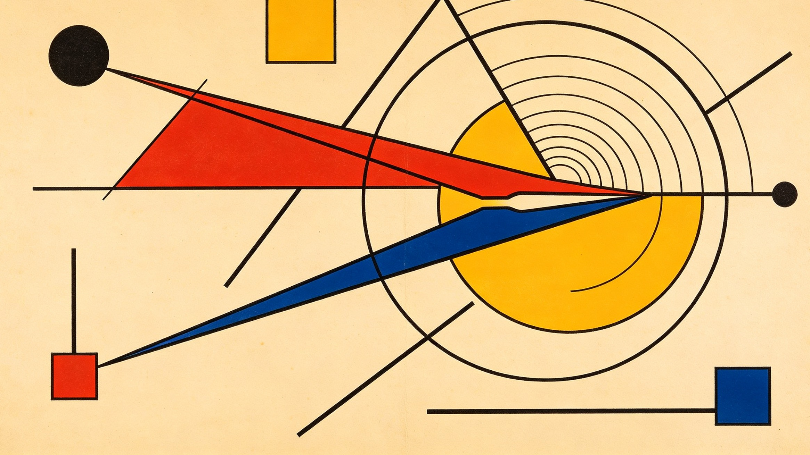
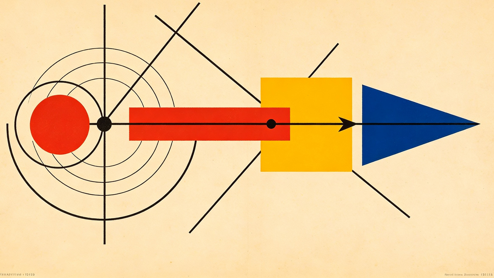
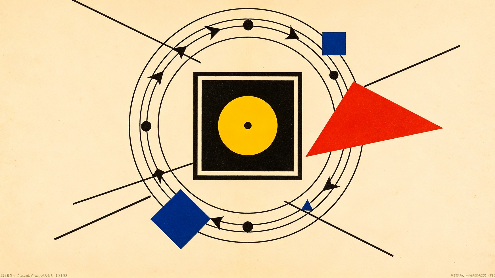
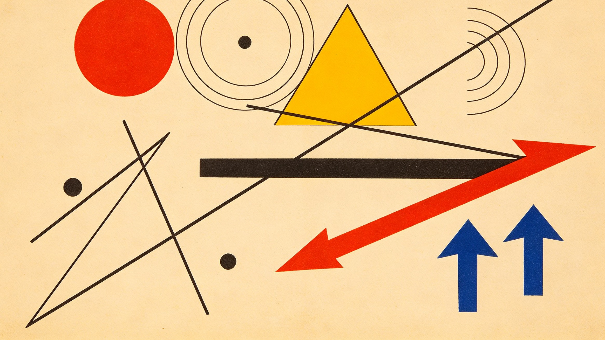
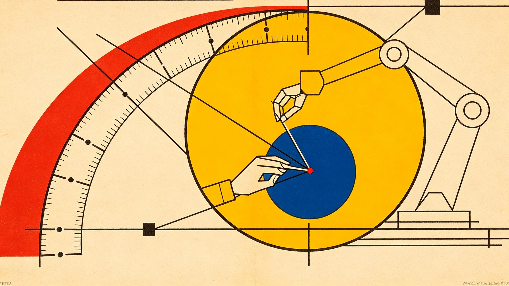

把镊子建模成"6+1"个自由度的关节工具,再用一套带约束的逆运动学,让灵巧手的指尖直接生成毫米级的笛卡尔运动。这是一篇只动手指、不动手腕的操作框架。
手腕不动,手指干活
机器人抓东西的套路几乎写死了:手负责"握住",手腕和机械臂负责"移动"。物体一旦被夹住,它在空间里怎么走,基本由腕子和臂来定。
人不是这么干的。
写字、缝合、解剖、插电路板,或者只是拿镊子夹一粒小东西——腕子几乎是定住的。真正在挪动工具尖端的是几根手指,它们彼此协调,让尖端产生一段很小、但很精确的位移。这种能力在镊子、止血钳、针、手术刀上尤其要紧,那里需要的常常就是毫米级的动作。
这篇论文盯住的就是这种能力:灵巧手攥着一把镊子,腕子完全固定,只靠手指,能不能把镊子尖端的笛卡尔位姿控住? 目标尺度定在"局部精密操作"这一档:
这件事在经典多指操作里能找到根。Cole、Hauser 和 Sastry 早年就给滚动接触下的多指操作建立了运动学模型,把手指运动、接触点运动、物体运动三者串了起来 [1]。真拿镊子做操作也有人试过——Senoo 等人分析手指与镊子的接触,接上高速视觉伺服,在二维和三维环境里用镊子摆弄小物体 [2]。更近的一批工作把可微接触模型和轨迹优化搬了进来,螺丝刀这类工具的多指操作能处理,滚动接触和复杂几何都有显式建模 [3]。
和"让机械臂去产生大部分工具运动"的路线不同,这篇工作只关心一件事:手在掌内做的局部操作。姿态也摆得很低——先立一个简单的、基于模型的表述,当作基线,学习方法留到后面再上。
一把镊子,六个加一个自由度
设灵巧手有 $n$ 个主动手指关节,手指关节构型写成
腕子和机械臂在这套框架里假定是不动的。镊子则被拆成两部分:一个是工具的刚体位姿,一个是它内部的开合坐标。刚体位姿记为
其中 $p_o\in\mathbb{R}^3$ 是镊子的参考位置,$R_o\in SO(3)$ 是它的朝向。它的空间速度是
再用 $\alpha$ 描述镊子的开合。于是工具的广义速度是
镊子就这样拿到了一个 6 + 1 自由度模型:
前六个量决定镊子往哪里走,第七个管张开和闭合。把工具内部自由度显式写出来,是后面所有推导的起点,也是它和"单纯抓一个刚体"最不一样的地方。

第一层:手指运动学
假设有 $m$ 个指尖与镊子接触。对第 $i$ 根手指,
它的笛卡尔速度是
其中 $J_i$ 就是普通的手指雅可比。把所有手指叠起来,
也就是
这一层其实没有新东西——它就是标准机械臂雅可比关系,只是被同时套在了多根手指上。真正的分歧出现在下一层。
第二层:工具接触运动学
看指尖与镊子的第 $i$ 个接触点。设这个接触在工具坐标系里的位置是 $r_i(\alpha)$(注意它随开合变化),它在世界系里的位置为
求导,
写成紧凑形式是 $\dot p_{c_i}=A_i(T_o,\alpha)\nu$,其中
对全部接触点,
在粘滞接触假设下,指尖速度和工具接触点的速度必须一致:
方程 (2) 是整个模型的核心约束。对照一下就很清楚:传统机械臂写的是 $J(q)\dot q=v_{\mathrm{EE}}$,而灵巧手—工具系统写的是
矩阵 $A$ 于是成了连接"手"和"工具"的那座桥。这一条等式换掉了传统机械臂等式右边的速度项,其余全部套路都能沿用。

第三层:镊子尖端运动学
真正要控的通常不是镊子的中心,而是它的尖端。设两个尖端在镊子坐标系里的位置是 $r_t^+(\alpha)$ 和 $r_t^-(\alpha)$,世界位置为
尖端中点是 $p_t=(p_t^++p_t^-)/2$,尖端间距是 $d=\|p_t^+-p_t^-\|$。一个顺手的任务表示就是
这里 $p_t\in\mathbb{R}^3$ 是尖端中点,$\phi_o\in\mathbb{R}^3$ 是工具朝向,$d\in\mathbb{R}$ 是镊子的开合量。求导得
于是有了一个直通的任务表示:
控制:该用带约束的二次规划
设期望任务是 $y_d$,任务误差 $e=y_d-y$。笛卡尔速度指令可以构造成 $\dot y_d^*=\dot y_d+K_pe$;目标静止时 $\dot y_d=0$,于是
控制器要找出手指关节速度 $\dot q$ 和工具速度 $\nu$,既满足 $J_h\dot q=A\nu$,又产生想要的任务运动 $H\nu\approx\dot y_d^*$。一个自然的写法是二次规划:
式 (4) 就是这套框架里的基础控制器。它比直接算伪逆好在哪?约束是"写进去"的,不是"躲过去"的。它天然能处理手指冗余自由度、关节限位、速度限位、偏好手型、多个同时存在的任务目标、姿态约束,以及镊子的开合约束。想加目标也不难,比如再补一项 $\lambda_p\|q-q_{\mathrm{nominal}}\|^2$,就能把整只手拉在舒服的抓握姿态附近。

一个平面算例
把问题压到二维:两根手指夹一把刚性镊子,开合固定。每根手指两个转动关节,
镊子的平面位形是 $\xi=[x,y,\theta]^T$。设两个接触点相对工具中心的位置是
当 $\theta=0$,接触点 1 的速度是
接触点 2 对应地是
合起来,
整个系统满足
平移 5 毫米。 设要求的运动是 $\Delta\xi=[5~\mathrm{mm},0,0]^T$,那么 $A\Delta\xi=[5,0,5,0]^T$ 毫米——两个指尖接触点都得沿 $x$ 正向挪 5 毫米。手指位移从 $J_h\Delta q=A\Delta\xi$ 解出;手是冗余的,所以
第二项落在零空间里,可以拿来维持一个舒服的手型,完全不影响工具该走的运动。
纯转动。 换成 $\Delta\xi=[0,0,\Delta\theta]^T$,可得 $\Delta p_1=[0,-a\Delta\theta]^T$、$\Delta p_2=[0,a\Delta\theta]^T$。一根手指向上,另一根向下,镊子的转动就这么从指尖的协同里长出来了。这正好说明灵巧操作的一个关键性质:
工具的笛卡尔运动,可以由几组幅度不大、但彼此协调的手指运动合成出来。

光有运动学不够:抓取力模型
只做运动学,并不能保证镊子一直稳稳地被夹着。设 $f=[f_1^T,\ldots,f_m^T]^T$ 是各指尖的接触力,合成的工具力旋量是 $w=Gf$,$G$ 是抓取矩阵。准静态下有 $Gf+w_{\mathrm{ext}}=0$。手指力矩与接触力的关系是
接触力里有一项特别有用,叫内力:$f_{\mathrm{int}}\in\mathrm{Null}(G)$。因为 $Gf_{\mathrm{int}}=0$,这些力能提高抓取稳定性,却不会让镊子产生任何净运动。于是总力可以写成 $f=f_{\mathrm{task}}+f_{\mathrm{int}}$,两个目标自然分开:
这套概念沿用经典的多指抓取与协调操作表述 [1,4]。
把运动和力放进同一个优化
运动控制器可以顺势扩成一个同时优化运动和抓取力的问题:
这里 $\mathcal{F}_i$ 是第 $i$ 个接触点的摩擦锥。式 (7) 给出了一个完整的、基于模型的镊子灵巧操作表述。
实验系统会长什么样
一个能落地的系统大致需要:多自由度灵巧手、关节编码器、指尖力或触觉传感器、一把普通的镊子、一个从外面盯着工具的光学追踪器或相机,以及一个锁死的机械腕。
流程也不复杂:机械臂先把灵巧手送到作业区域附近,然后锁住臂,之后所有精细操作都由手指产生。一个顺手的基准工作区间是 $[-5,5]\times[-5,5]\times[-5,5]$ 毫米。
实验序列可以先放六个基本平移:$(±5,0,0)$、$(0,±5,0)$、$(0,0,±5)$ 毫米。再往上加复杂轨迹:半径 5 毫米的圆、方形轨迹、三维螺旋、点对点定位,以及用镊子开合去夹一个小物体。
评价指标用尖端位置误差 $e_p=\|p_t-p_t^d\|$、姿态误差 $e_R$、开合误差 $e_d=|d-d_d|$,再统计尖端跟踪误差的 RMS、最大跟踪误差、重复性、姿态误差、抓取力波动、接触滑移和抓取成功率。第一个值得盯的目标是尖端 RMSE 小于 1 毫米。
讨论:真正起作用的是一个"手—工具任务雅可比"
这套表述把机械臂操作和灵巧手在掌操作分得很清楚。传统臂操作是 $\dot x=J_{\mathrm{arm}}\dot q_{\mathrm{arm}}$;灵巧工具操作走的是
所以起作用的雅可比并不只是某一根手指的雅可比,它是一个 手—工具任务雅可比:
按这个视角,灵巧手可以被当成一台微型冗余机械臂,它的"末端"不是指尖,而是工具的尖端。这种理解在"机械臂负责大范围定位、手指负责第二套更小但更精密的工作空间"的任务里尤其好用,天然形成两级架构:机械臂做粗定位,灵巧手做精定位。它和那些显式建模滚动接触、接触状态会变的复杂轨迹优化方法是互补的,不是竞争关系 [3]。

局限与扩展方向
初始模型假定几何已知、手指与工具的接触足够稳定。下面几处扩展都很要紧。
滚动接触。 指尖的接触点可能沿镊子表面移动。这时 $r_i=r_i(t)$ 必须变成额外状态,并引入滚动约束。经典滚动接触表述 [1] 和最近的可微滚动模型 [3] 都能当作基础。
接触滑移。 如果粘滞没法保证,摩擦接触模式就应该显式区分粘、滚、滑三种状态。
镊子的柔顺性。 真实镊子是弹性的,不是理想转动机构。更准的模型可以引入 $\tau_\alpha=k_\alpha(\alpha-\alpha_0)+b_\alpha\dot\alpha$,让开合量同时成为几何状态和力学状态。
模型预测控制。 式 (7) 可以从瞬时 QP 控制自然推广到 MPC:
这样关节限位、未来的接触构型、抓取稳定性都能放进一个有限时域里考虑。
结论
这篇论文给出了一套基于模型的表述,用纯手指运动去灵巧地操纵镊子。核心关系是
它把灵巧手的关节运动和镊子的刚体加关节运动连在一起;工具任务则写成
其中 $y$ 同时包含镊子尖端的位置、朝向和开合。两条式子合起来,把"用工具"这件事变成了一个带约束的逆运动学问题——精神和传统机械臂笛卡尔控制一致,只是多了多个手指接触和工具自身内部自由度这两件事。
得到的架构其实很朴素:机械臂负责粗定位,灵巧手负责最后那毫米级的一下。对镊子操作、显微手术器械、实验室操作、精密装配这类场景来说,把操作在"臂"和"手指"之间这样分家,可能同时换来更高的灵巧度和更高的局部定位精度。
参考文献
[1] A. Cole, J. Hauser, and S. Sastry, "Kinematics and Control of Multifingered Hands with Rolling Contact," IEEE Transactions on Automatic Control, vol. 34, no. 4, pp. 398–404, 1989. DOI: 10.1109/9.28014.
[2] T. Senoo, D. Yoneyama, A. Namiki, and M. Ishikawa, "Tweezers Manipulation Using High-speed Visual Servoing Based on Contact Analysis," IEEE International Conference on Robotics and Biomimetics (ROBIO), pp. 1936–1941, 2011. DOI: 10.1109/ROBIO.2011.6181574.
[3] F. Yang, T. Power, S. Aguilera Marinovic, S. Iba, R. Soltani Zarrin, and D. Berenson, "Multi-Finger Manipulation via Trajectory Optimization With Differentiable Rolling and Geometric Constraints," IEEE Robotics and Automation Letters, vol. 10, no. 5, pp. 5170–5177, 2025. DOI: 10.1109/LRA.2025.3557752.
[4] Z. Li, P. Hsu, and S. Sastry, "Grasping and Coordinated Manipulation by a Multifingered Robot Hand," The International Journal of Robotics Research, vol. 8, no. 4, 1989.